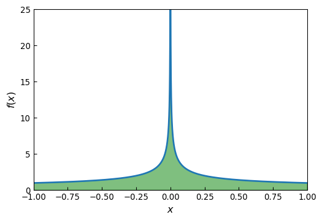

import numpy as np
from scipy import integrate
import sympy
sympy.init_printing()
import matplotlib.pyplot as plt
import matplotlib as mplAppendix G — Integration
H Integration
\(~\)
H.1 Importing modules
from scipy import __version__
print("numpy: ", np.__version__)
print("sympy: ", sympy.__version__)
print("scipy: ", __version__)numpy: 2.3.1
sympy: 1.14.0
scipy: 1.16.0H.2 Numerical integration methods
Here we are concerned with evaluating definite integrals on the form
\[I(f) = \int_a^b \,f(x)\, dx\]
with given integration limits \(a\) and \(b\). The interval \([a,b]\) can be finite, semi-infinite (where either \(a=-\infty\) or \(b=\infty\)), or infinite (where \(a=-\infty\) and \(b=\infty\))
\[ I(f) \approx \sum_{i=0}^{n-1} \omega_i f(x_i) +r_n\]
Quadrature rules can be derived from interpolations of \(f(x)\) on the interval \([a,b]\). If the points \(x_i\) are evenly spaced in the interval \([a,b]\), and a polynomial interpolation is used, then the resulting quadrature rule is known as a Newton-Cotes quadrature rule
For instance, approximating \(f(x)\) with a zeroth order polynomial (constant value) using the midpoint value \(x_0 = (a +b) /2\), \(\,\)we obtain
\[ I(f) \approx f \left( \frac{b -a}{2} \right) \int_a^b dx = (b -a) f \left( \frac{b -a}{2} \right) \]
This is known as the midpoint rule, and it integrates polynomials up to order one (linear functions) exactly, and it is therefore said to be of polynomial degree one
Approximating \(f(x)\) by a polynomial of degree one, evaluated at the endpoints of the interval, results in
\[ I(f) \approx \frac{b -a}{2} \left[ f(a) +f(b) \right] \]
This is known as the trapezoidal rule, and it is also of polynomial degree one
Using an interpolation polynomial of second order results in Simpson’s rule,
\[ I(f) \approx \frac{b -a}{6} \left[ f(a) +4 f \left( \frac{a +b}{2} \right) +f(b) \right] \]
which uses function evaluations at the endpoints and the midpoint. This method is of polynomial degree three, meaning that it integrates exactly polynomials up to order three
a, b, X = sympy.symbols("a, b, x")
f = sympy.Function("f")
x = a, (a +b)/2, b # for Simpson's rule
w = [sympy.symbols(f"w_{i}") for i in range(len(x))]
q_rule = sum([w[i] *f(x[i]) for i in range(len(x))])
q_rule\(\displaystyle w_{0} f{\left(a \right)} + w_{1} f{\left(\frac{a}{2} + \frac{b}{2} \right)} + w_{2} f{\left(b \right)}\)
- To compute the appropriate values of the weight factors \(w_i\), we choose the polynomial basis functions \(\{ \phi_n(x) = x^n \}_{n=0}^2\) for the interpolation of \(f(x)\)
phi = [sympy.Lambda(X, X**n) for n in range(len(x))]
phi\(\displaystyle \left[ \left( x \mapsto 1 \right), \ \left( x \mapsto x \right), \ \left( x \mapsto x^{2} \right)\right]\)
eqs = [q_rule.subs(f, phi[n])
-sympy.integrate(phi[n](X), (X, a, b))
for n in range(len(phi))]
eqs\(\displaystyle \left[ a - b + w_{0} + w_{1} + w_{2}, \ \frac{a^{2}}{2} + a w_{0} - \frac{b^{2}}{2} + b w_{2} + w_{1} \left(\frac{a}{2} + \frac{b}{2}\right), \ \frac{a^{3}}{3} + a^{2} w_{0} - \frac{b^{3}}{3} + b^{2} w_{2} + w_{1} \left(\frac{a}{2} + \frac{b}{2}\right)^{2}\right]\)
w_sol = sympy.solve(eqs, w)
w_sol\(\displaystyle \left\{ w_{0} : - \frac{a}{6} + \frac{b}{6}, \ w_{1} : - \frac{2 a}{3} + \frac{2 b}{3}, \ w_{2} : - \frac{a}{6} + \frac{b}{6}\right\}\)
q_rule.subs(w_sol).simplify()\(\displaystyle \frac{\left(a - b\right) \left(- f{\left(a \right)} - f{\left(b \right)} - 4 f{\left(\frac{a}{2} + \frac{b}{2} \right)}\right)}{6}\)
We recognize this result as Simpson’s quadrature rule given above. Choosing different sample points (the \(x\) tuple in this code), results in different quadrature rules
Higher-order quadrature rules can similarly be derived using higher-order polynomial interpolation (more sample points in the \([a,b]\)). However, high-order polynomial interpolation can have undesirable behavior between the sample points
Rather than using higher-order quadrature rules, it is therefore often better to divide the integration interval \([a,b]\) into subintervals \([a=x_0, x_1], [x_1, x_2], \cdots, [x_{n-1},x_n = b]\) and use a low-order quadrature rule in each of these sub-intervals. Such methods are known as composite quadrature rules
An important parameter that characterize composite quadrature rules is the sub-interval length \(h=(b-a)/N\). Estimates for the errors in an approximate quadrature rule, and the scaling of the error with respect to \(h\), can be obtained from Taylor series expansions of the integrand and the analytical integration of the term in the resulting series
We have seen that the Newton-Cotes quadrature rules uses evenly spaced sample points of the integrand \(f(x)\). However, this is not necessarily the most efficient choice of quadrature nodes, and then it can be advantageous to use quadrature rules that do not use evenly spaced sample points
An example of such a method is a Gaussian quadrature, which also uses polynomial interpolation to determine the values of the weight factors in the quadrature rule, but where the quadrature nodes \(x_i\) are chosen to maximize the order of polynomials that can be integrated exactly (the polynomial degree) given a fixed number of quadrature points
H.3 Numerical integration with Scipy
The numerical quadrature routines in the
scipyintegratemodule can be categorized into two types: routines that take the integrand as a python function, and routines that take arrays with samples of the integrand at given pointsThe functions of the first type use Gaussian quadrature (
quad,quadrature,fixed_quad), while functions of the second type use Newton-Cotes methods (trapz,simps, andromb)As a concrete example, consider the numerical evaluation of the integral
\[ \int_{-1}^1 \, e^{-x^2}\, dx\]
def f(x):
return np.exp(-x**2)
val, err = integrate.quad(f, -1, 1)val, err\(\displaystyle \left( 1.49364826562485, \ 1.65828269518814 \cdot 10^{-14}\right)\)
H.3.1 Extra arguments
We wish to evaluate
\[ \int_{-1}^1 \, a e^{-(x -b)^2/c^2} \,dx \]
for the specific values of the parameters \(a=1\), \(b=2\), and \(c=3\)
def f(x, a, b, c):
return a *np.exp(-((x -b)/c)**2)
val, err = integrate.quad(f, -1, 1, args=(1, 2, 3))val, err\(\displaystyle \left( 1.27630683510222, \ 1.41698523481695 \cdot 10^{-14}\right)\)
H.3.2 Reshuffle arguments
We wish to compute the integral
\[\int_{0}^5 J_0(x) \,dx\]
where the integrand \(J_0(x)\) is the zero-th order Bessel function of the first kind,
from scipy.special import jv
f = lambda x: jv(0, x)
val, err = integrate.quad(f, 0, 5)val, err\(\displaystyle \left( 0.715311917784768, \ 2.47260738289741 \cdot 10^{-14}\right)\)
H.3.3 Infinite limits
- Consider the integral \[ \int_{-\infty}^\infty e^{-x^2} \,dx \]
f = lambda x: np.exp(-x**2)
val, err = integrate.quad(f, -np.inf, np.inf, epsabs=1.49e-14, epsrel=1.49e-14)val, err\(\displaystyle \left( 1.77245385090552, \ 2.04282393124645 \cdot 10^{-14}\right)\)
H.3.4 Singularity
Consider the integral \[ \int_{-1}^1 \frac{1}{\sqrt{|x|}} \,dx \]
The integrand diverges at \(x=0\), but the value of the integral does not diverge, and its value is \(4\). Naively trying to compute this integral using
quadmay fail because of the diverging integrand:
import warnings
warnings.filterwarnings("error")
f = lambda x: 1/np.sqrt(abs(x))
a, b = -1, 1
try:
integrate.quad(f, a, b)
except Exception as e:
print(e)divide by zero encountered in scalar dividex = np.linspace(a, b, 10000)
fig, ax = plt.subplots(figsize=(6, 4))
ax.plot(x, f(x), lw=2)
ax.fill_between(x, f(x), color='green', alpha=0.5)
ax.set_xlabel("$x$", fontsize=12)
ax.set_ylabel("$f(x)$", fontsize=12)
ax.set_xlim(-1, 1)
ax.set_ylim(0, 25)
ax.tick_params(which='both', direction='in')
- In this case, the evaluation of the integral fails because the integrand diverges exactly at one of the sample points in the Gaussian quadrature rule (the midpoint). We can guide the
quadroutine by specifying a list of points that should be avoided using thepointskeyword arguments, and usingpoints=[0]in the current example allows quad to correctly evaluate the integral:
val, err = integrate.quad(f, a, b, points=[0])val, err\(\displaystyle \left( 4.0, \ 2.04281036531029 \cdot 10^{-14}\right)\)
H.3.5 Tabulated integrand
- Let’s evaluate the integral \(\displaystyle\int_0^2 \sqrt{x}\, dx\) by taking \(25\) samples of the integrand in the integration interval \([0, 2]\),
f = lambda x: np.sqrt(x)
a, b = 0, 2
x = np.linspace(a, b, 25)
y = f(x)
#----------------
fig, ax = plt.subplots(figsize=(6, 4))
ax.plot(x, y, 'bo')
xx = np.linspace(a, b, 500)
ax.plot(xx, f(xx), 'b-')
ax.fill_between(xx, f(xx), color='green', alpha=0.5)
ax.set_xlim(0, 2)
ax.set_ylim(0, 1.6)
ax.set_xlabel(r"$x$", fontsize=12)
ax.set_ylabel(r"$f(x)$", fontsize=12)
ax.tick_params(which='both', direction='in')val_trapz = integrate.trapezoid(y, x)
val_trapz\(\displaystyle 1.88082171605085\)
val_simps = integrate.simpson(y, x)
val_simps\(\displaystyle 1.88366510244871\)
val_exact = 2.0/3.0 *(b-a)**(3.0/2.0)
val_exact\(\displaystyle 1.88561808316413\)
val_exact -val_trapz\(\displaystyle 0.00479636711327625\)
val_exact -val_simps\(\displaystyle 0.00195298071541172\)
x = np.linspace(a, b, 1 +2**6)
y = f(x)
dx = x[1] -x[0]
val_exact -integrate.romb(y, dx=dx)\(\displaystyle 0.000378798422913107\)
val_exact -integrate.simpson(y, dx=dx)\(\displaystyle 0.000448485554158218\)
H.4 Multiple integration
The double integral routine
dblquadcan evaluate integrals on the form\[\int_a^b \int_{g(y)}^{h(y)} f(x,y)\, dxdy \]
and it has the function signature
dblquad(f, a, b, g, h), \(~\)wherefis a python function for the integrand,aandbare constant integration limits along the \(y\) dimension, andgandhare python functions (taking \(y\) as argument) that specify the integration limits along the \(x\) dimensionConsider the integral \(\displaystyle\int_0^1 \int_0^1 e^{-(x^2+y^2)}\,dxdy\),
def f(x, y):
return np.exp(-x**2 -y**2)
a, b = 0, 1
g = lambda y: 0
h = lambda y: 1integrate.dblquad(f, a, b, g, h)\(\displaystyle \left( 0.557746285351034, \ 8.29137438153541 \cdot 10^{-15}\right)\)
The
tplquadfunction can compute integrals on the form\[ \int_a^b \int_{g(z)}^{h(z)} \int_{q(y, z)}^{r(y, z)} f(x,y,z)\,dxdydz \]
Consider the generalization of the previous integral to three variables:
\[\int_0^1 \int_0^1 \int_0^1 e^{-(x^2+y^2+z^2)}\,dxdydz\]
def f(x, y, z):
return np.exp(-x**2 -y**2 -z**2)
a, b = 0, 1
g, h = lambda z: 0, lambda z: 1
q, r = lambda y, z: 0, lambda y, z: 1
integrate.tplquad(f, 0, 1, g, h, q, r)\(\displaystyle \left( 0.416538385886638, \ 8.29133528731443 \cdot 10^{-15}\right)\)
- For arbitrary number of integrations, we can use the
nquadfunction
integrate.nquad(f, [(0, 1), (0, 1), (0, 1)])\(\displaystyle \left( 0.416538385886638, \ 8.29133528731443 \cdot 10^{-15}\right)\)
def f(*args):
return np.exp(-np.sum(np.array(args)**2))%time integrate.nquad(f, [(0, 1)] *1)CPU times: user 121 μs, sys: 81 μs, total: 202 μs
Wall time: 206 μs\(\displaystyle \left( 0.746824132812427, \ 8.29141347594073 \cdot 10^{-15}\right)\)
%time integrate.nquad(f, [(0, 1)] *2)CPU times: user 1.17 ms, sys: 76 μs, total: 1.25 ms
Wall time: 1.25 ms\(\displaystyle \left( 0.557746285351034, \ 8.29137438153541 \cdot 10^{-15}\right)\)
%time integrate.nquad(f, [(0, 1)] *3)CPU times: user 24.3 ms, sys: 412 μs, total: 24.7 ms
Wall time: 24.8 ms\(\displaystyle \left( 0.416538385886638, \ 8.29133528731443 \cdot 10^{-15}\right)\)
%time integrate.nquad(f, [(0, 1)] *4)CPU times: user 521 ms, sys: 4.63 ms, total: 525 ms
Wall time: 531 ms\(\displaystyle \left( 0.311080918822877, \ 8.29129619327777 \cdot 10^{-15}\right)\)
H.5 Symbolic and arbitrary-precision integration
- For example, to compute the integral \(\displaystyle\int_{-1}^{1} 2\sqrt{1-x^2}\,dx\), \(~\)we first create a symbol for \(x\), and define expressions for the integrand and the integration
x = sympy.symbols("x")
f = 2 *sympy.sqrt(1 -x**2)
a, b = -1, 1
val_sym = sympy.integrate(f, (x, a, b))
val_sym\(\displaystyle \pi\)
As pointed out earlier, this situation is the exception, and in general we will not be able to find an analytical closed-form expression. We then need to resort to numerical quadrature, for example, using scipy’s
integrate.quadHowever, the
mpmathlibrary, which comes bundled with sympy, \(~\)provides an alternative implementation of numerical quadrature, using multiple-precision computations. With this library, we can evaluate an integral to arbitrary precision, without being restricted to the limitations of floating-point numbersFor example, if we require 75 accurate decimal places, we set:
import mpmathmpmath.mp.dps = 75
f_mpmath = sympy.lambdify(x, f, 'mpmath')val = mpmath.quad(f_mpmath, (a, b))
sympy.sympify(val)\(\displaystyle 3.14159265358979323846264338327950288419716939937510582097494459230781640629\)
sympy.N(val_sym, mpmath.mp.dps +1) -val\(\displaystyle 6.90893484407555570030908149024031965689280029154902510801896277613487344253 \cdot 10^{-77}\)
%time mpmath.quad(f_mpmath, [a, b])CPU times: user 1.22 ms, sys: 201 μs, total: 1.42 ms
Wall time: 1.43 msmpf('3.14159265358979323846264338327950288419716939937510582097494459230781640628613')f_numpy = sympy.lambdify(x, f, 'numpy')
%time integrate.quad(f_numpy, a, b)CPU times: user 246 μs, sys: 18 μs, total: 264 μs
Wall time: 267 μs\(\displaystyle \left( 3.1415926535898, \ 2.00047223231081 \cdot 10^{-9}\right)\)
H.5.1 Double and triple integrals
The
mpmathlibrary’squadfunction can also be used to evaluate double and triple integrals.For example, to compute the double integral:
\[ \int_0^1 \int_0^1 \cos(x) \cos(y)\, e^{-(x^2+y^2)}\, dxdy \]
and the triple integral:
\[ \int_0^1 \int_0^1 \int_0^1 \cos(x) \cos(y) \cos(z)\, e^{-(x^2+y^2+z^2)}\, dx dy dz \]
to 30 significant decimals (this example cannot be solved symbolically with
sympy)
x, y, z = sympy.symbols('x, y, z')f2 = sympy.cos(x) *sympy.cos(y) *sympy.exp(-x**2 -y**2)
f3 = sympy.cos(x) *sympy.cos(y) *sympy.cos(z) *sympy.exp(-x**2 -y**2 -z**2)
f2_mpmath = sympy.lambdify((x, y), f2, 'mpmath')
f3_mpmath = sympy.lambdify((x, y, z), f3, 'mpmath')mpmath.mp.dps = 30
res2 = mpmath.quad(f2_mpmath, (0, 1), (0, 1))
res3 = mpmath.quad(f3_mpmath, (0, 1), (0, 1), (0, 1))sympy.sympify(res2), sympy.sympify(res3)\(\displaystyle \left( 0.430564794306099099242308990196, \ 0.282525579518426896867622772405\right)\)
H.6 Integral transforms
In general, an integral transform of a function \(f(t)\) can be written as
\[ T_f(u) = \int_{t_1}^{t_2} \, K(t, u) f(t) \,dt\]
where \(T_f(u)\) is the transformed function. The choice of the kernel \(K(t, u)\) and the integration limits determines the type of integral transform. The inverse of the integral transform is given by
\[ f(t)=\int_{u_1}^{u_2} K^{-1}(u, t) \, T_f(u) \, du\]
where \(K^{-1} (u,t)\) is the kernel of the inverse transform
Sympyprovides functions for several types of integral transform, but here we focus on the Laplace transform\[ L_f(s) = \int_0^{\infty} e^{-st} f(t) \,dt \]
with the inverse transform
\[ f(t) = \frac{1}{2\pi i} \int_{\gamma -i\infty}^{\gamma +i \infty} e^{st} L_f(s)\,ds\]
and the Fourier transform
\[ F_f(\omega) = \frac{1}{\sqrt{2\pi}} \int_{-\infty}^{\infty} e^{-i\omega t} f(t)\,dt\]
with the inverse transform
\[ f(t) = \frac{1}{\sqrt{2\pi}} \int_{-\infty}^{\infty} e^{i\omega t} F_f(\omega)\,d\omega\]
With
sympy, we can perform these transforms with thesympy.laplace_transformandsympy.fourier_transform, respectively,and the corresponding inverse transforms can be computed with the
sympy.inverse_laplace_transformandsympy.inverse_fourier_transform
s = sympy.symbols('s')
a, t = sympy.symbols('a, t', positive=True)
f = sympy.sin(a*t)
sympy.laplace_transform(f, t, s)\(\displaystyle \left( \frac{a}{a^{2} + s^{2}}, \ 0, \ \text{True}\right)\)
F = sympy.laplace_transform(f, t, s, noconds=True)
F\(\displaystyle \frac{a}{a^{2} + s^{2}}\)
sympy.inverse_laplace_transform(F, s, t, noconds=True)\(\displaystyle \sin{\left(a t \right)}\)
[sympy.laplace_transform(f, t, s, noconds=True) for f in [t, t**2, t**3, t**4]]\(\displaystyle \left[ \frac{1}{s^{2}}, \ \frac{2}{s^{3}}, \ \frac{6}{s^{4}}, \ \frac{24}{s^{5}}\right]\)
a = sympy.symbols('a', positive=True)
sympy.laplace_transform(t**a, t, s, noconds=True)\(\displaystyle s^{- a - 1} \Gamma\left(a + 1\right)\)
sympy.laplace_transform((1 -a*t) *sympy.exp(-a*t), t, s, noconds=True)\(\displaystyle - \frac{a}{\left(a + s\right)^{2}} + \frac{1}{a + s}\)
x, w = sympy.symbols("x, omega")
f = sympy.exp(-x**2)
F = sympy.fourier_transform(f, x, w)
F\(\displaystyle \sqrt{\pi} e^{- \pi^{2} \omega^{2}}\)
sympy.inverse_fourier_transform(F, w, x)\(\displaystyle e^{- x^{2}}\)